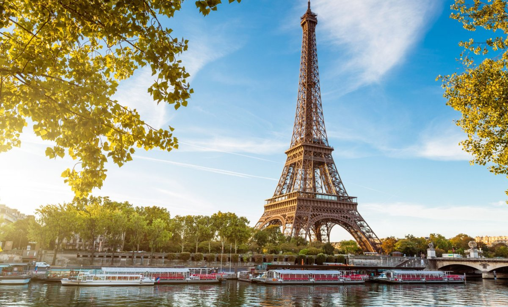

Stavba století
Eiffelova věž byla postavena pro Světovou výstavu v roce 1889 a měla sloužit jen jako dočasný vstupní oblouk. Její stavba trvala jen něco málo přes dva roky, což je na tehdejší technologie opravdu obdivuhodný výkon. Pojmenována je po svém konstruktérovi, slavném inženýru Gustavu Eiffelovi, který dohlížel na celý projekt. Původní plány počítaly se stržením věže po 20 letech, ale její využití pro meteorologické a rádiové vysílání ji zachránilo. Věž se stala nejvyšší stavbou světa, než ji ve 30. letech překonal mrakodrap v New Yorku.
Návštěvníci si mohou vybrat, zda na vrchol vystoupají po schodech nebo se svezou historickým výtahem. Věž v noci ožívá díky tisícům blikajících světel, která vytvářejí každou hodinu po setmění nádhernou světelnou show. Dnes je Eiffelovka jedním z nejikoničtějších a nejnavštěvovanějších symbolů celé Francie.
Rychlé prokliky
5 Zajímavých faktů
- Váží více než 10 000 tun.
- Je vysoká asi 330 metrů.
- Při silném větru se její vrchol vychýlí.
- Při nízkých teplotách se výška věže zmenší.
- Má více než 18 000 kovových částí.
Foto
